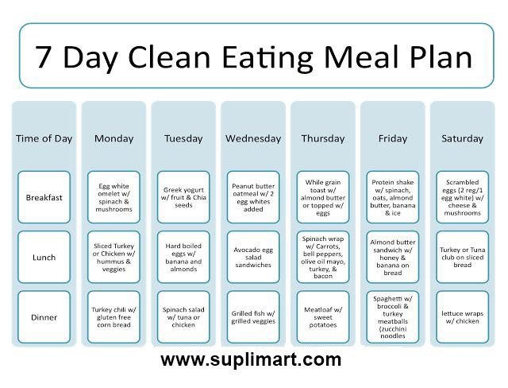
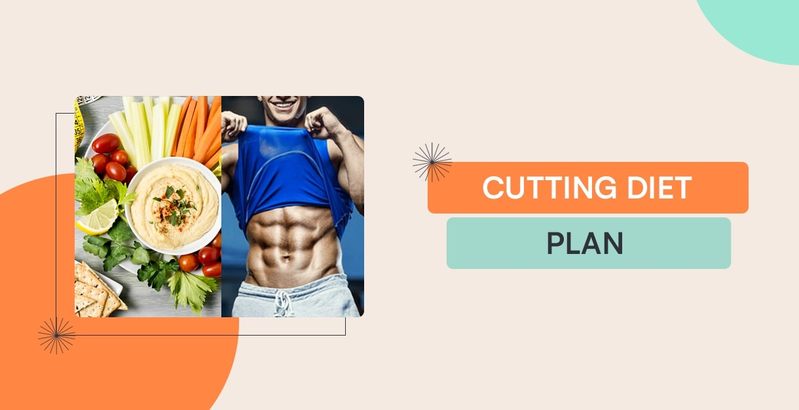

Cutting Diet
A healthy snack may include fruit, yoghurt, muffin, rice pudding, low-fat custard, milkshake or liquid meal supplement. Avoid high-fat junk foods. Instead, choose nutritious high-fat foods such as avocado or nuts. Top your usual foods with some concentrated calories, like grated cheese.

Bulking Diet
Planning diets refers to determining what usual nutrient intake should be. Regardless of whether one is planning diets for individuals or groups, the goal is to have diets that are nutritionally adequate, or conversely, to ensure that the probability of nutrient inadequacy or excess is acceptably low.